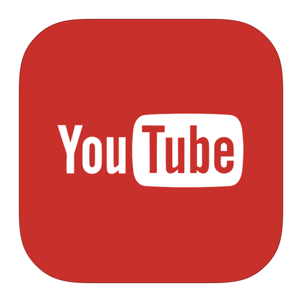

O Urban Channel é um website destinado a fins acadêmicos, se tratando de um projeto realizado no curso de Ciência da Computação, da Universidade Paulista, cujo propósito é desenvolver um site com as linguagens HTML e CSS que aborde assuntos referentes a sustentabilidade. A partir desse cenário, a temática abordada foi "mobilidade urbana", e nosso objetivo é conscientizar a população acerca desse assunto, visto que esse é de suma importância, pois faz parte do cotidiano de todos.
Ademais, se quiser acesso a mais conteúdos relacionados a mobilidade urbana, acompanhe-nos em nossas redes sociais!
@_urbanchannel
